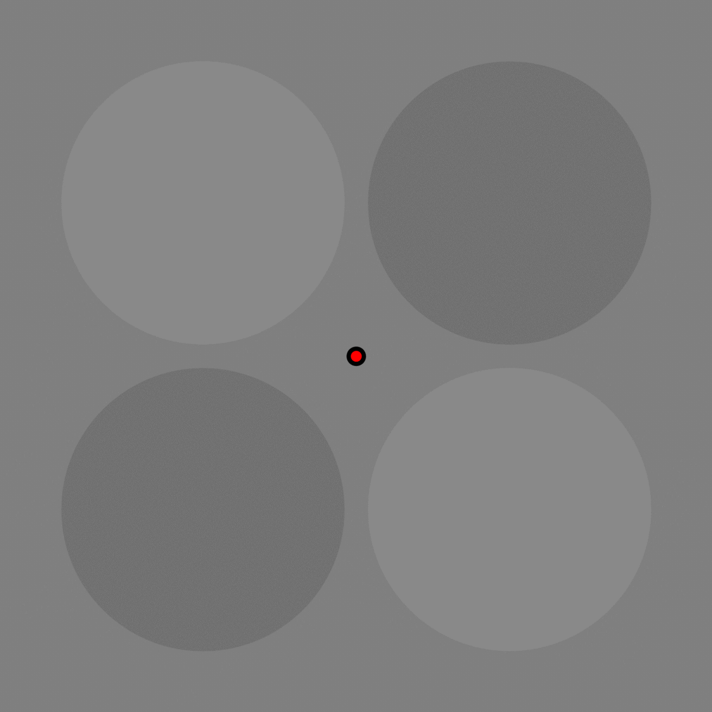
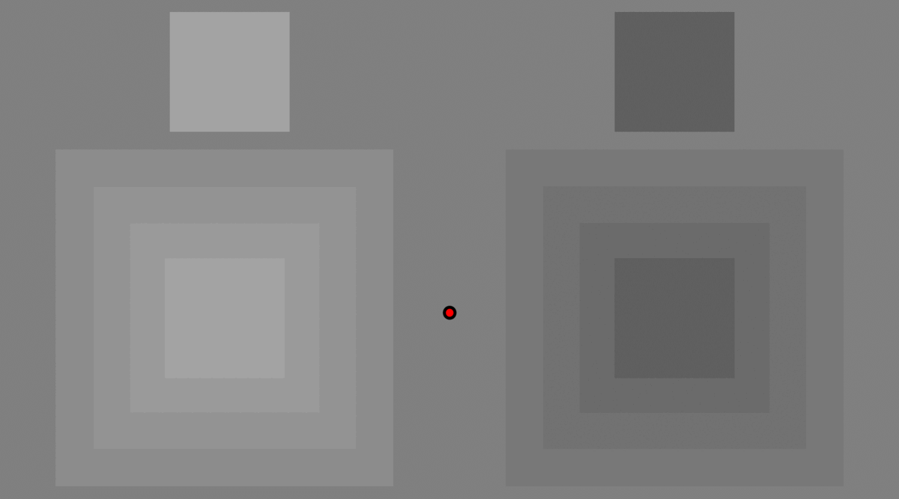
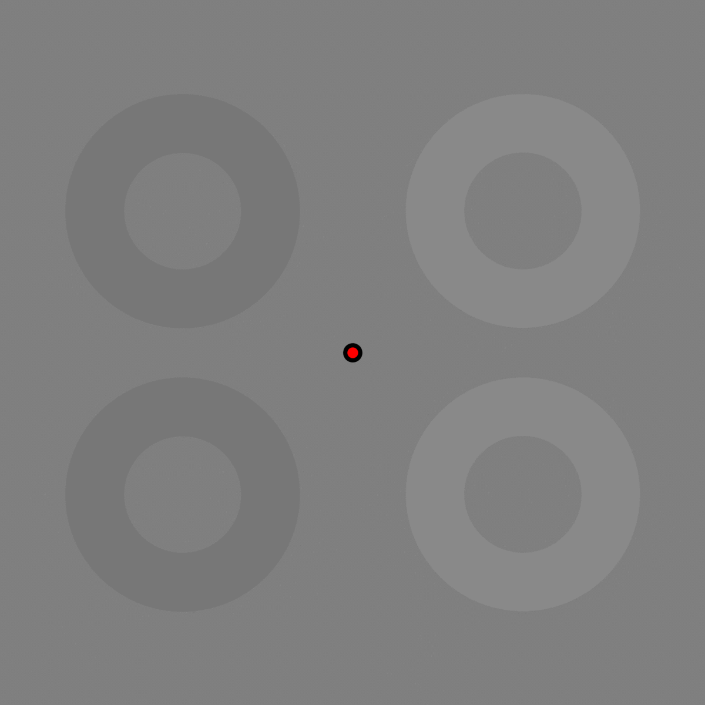

Contour erasure describes the phenomenon that our detection to an object decreases after the contour of that object was shortly adapted.
Prof. Stuart Anstis discovered contour erasure in 2013 (Anstis, S. (2013). Contour adaptation. Journal of Vision, 13(2), 25-25.).
Here, I presented some of the contour erasure demos I made.
Enjoy it!
You should only see one arrow left after the rest three are being adapted.

By gradually matching the contours of the disks, you should eventually see all 6 disks disappering. For contour erasure to work, the contour adapters must match that of the objects.

Contour erasure works across many flickering rates.
After the only half of the disk is adapted, the adapted side "blended" into the background.

By adapting all step contours, we can make a high contrast patch at the center disappear as well.
Depends on whether it is the inner or outter contour that is adapted, you should see large or small disks left.
